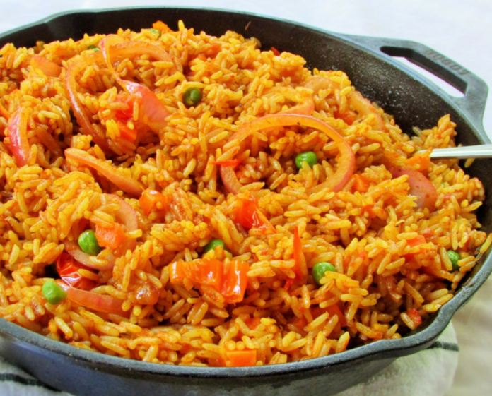

Description
The Ghanaian Jollof Rice is the favorite rice dish of most Ghanaians. It is loved by most Ghanaians and foreigners alike because it is easy to prepare and can be garnished in a variety of ways. Also, it is a mouth-watering and nutrient-dense meal.
There is a Nigerian version which is prepared differently and hence tastes different. However, it is widely known and accepted that the Ghanaian Jollof Rice tastes better than that of Nigerians. I might be bias on that one but you can actually find out for yourself.
Ingredients
- 2 large yellow onions, roughly chopped
- 1/3 cup vegetable oil (80 ml), plus 2 tablespoons, divided
- 14 oz diced tomato (395 g), 2 cans
- 6 oz tomato paste (170 g), 1 can
- 1 habanero pepper
- 2 teaspoons curry powder
- 1 teaspoon garlic powder
- 1 teaspoon ground ginger
- 1/2 teaspoon mixed dried herbs
- 3 chicken bouillon cubes, crushed
- 2 1/2 cups long grain rice (500 g), rinsed
- 1 cup frozen mixed vegetable (150 g)
- 1 1/2 cups water (360 ml)
Steps
- Add onions and 2 tablespoons of oil to a blender and pulse until smooth. Transfer
to a medium bowl.
- Add the diced tomatoes, tomato paste, and habanero pepper to the blender, and
pulse until smooth. Transfer to a separate medium bowl.
- Heat the remaining 1/3 cup (80 ml) of oil in a large, heavy-bottomed pot over
medium heat.
- Once the oil is shimmering, add the onion puree and cook until the water has
cooked out and the puree is starting to brown, about 10 minutes.
- Stir in the tomato puree and add the curry powder, garlic powder, ginger, dried
herbs, and crushed bouillon cubes. Cook for 20-30 minutes, stirring occasionally,
until the stew has reduced by half and is deep red in color.
- Add the rice, mixed vegetables, and water. Bring to a boil, then reduce the heat to
low and cover the pot with foil and a lid. Simmer for another 30 minutes, until the
rice is cooked through and the liquid is absorbed.
- Enjoy!
Return to the top
Return to the main page